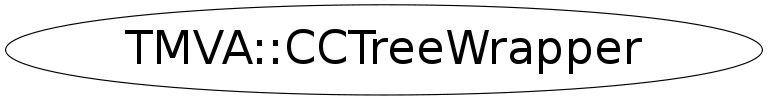

Function Members (Methods)
public:
| ~CCTreeWrapper() | |
| TMVA::CCTreeWrapper | CCTreeWrapper(const TMVA::CCTreeWrapper&) |
| TMVA::CCTreeWrapper | CCTreeWrapper(TMVA::DecisionTree* T, TMVA::SeparationBase* qualityIndex) |
| Double_t | CheckEvent(const TMVA::Event& e, Bool_t useYesNoLeaf = false) |
| TMVA::CCTreeWrapper::CCTreeNode* | GetRoot() |
| void | InitTree(TMVA::CCTreeWrapper::CCTreeNode* t) |
| TMVA::CCTreeWrapper& | operator=(const TMVA::CCTreeWrapper&) |
| void | PruneNode(TMVA::CCTreeWrapper::CCTreeNode* t) |
| Double_t | TestTreeQuality(const TMVA::CCTreeWrapper::EventList* validationSample) |
| Double_t | TestTreeQuality(const TMVA::DataSet* validationSample) |
Data Members
private:
| TMVA::DecisionTree* | fDTParent | ! pointer to underlying DecisionTree |
| TMVA::SeparationBase* | fQualityIndex | ! pointer to the used quality index calculator |
| TMVA::CCTreeWrapper::CCTreeNode* | fRoot | ! the root node of the (wrapped) decision Tree |
Class Charts
{kind=link}
{kind=link}
{kind=link}
{kind=link}

Function documentation
Double_t TestTreeQuality( const EventList* validationSample )
return the misclassification rate of a pruned tree for a validation event sample using an EventList
Double_t TestTreeQuality( const DataSet* validationSample )
return the misclassification rate of a pruned tree for a validation event sample using the DataSet
Double_t CheckEvent(const TMVA::Event& e, Bool_t useYesNoLeaf = false)
return the decision tree output for an event
CCTreeWrapper(TMVA::DecisionTree* T, TMVA::SeparationBase* qualityIndex)